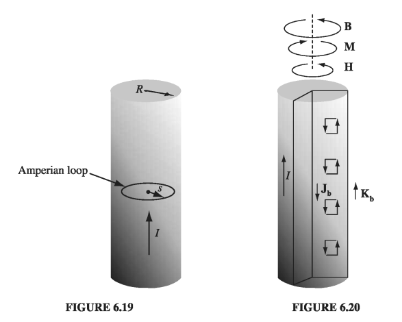

6.3: The Auxiliary Field H#
6.3.1: Ampere’s Law in Magnetized Materials#
In Section 6.2, we found that the effect of magnetization is to establish bound currents \( \vec{J_b} = \nabla \times \vec{M} \) within the material and \( \vec{K_b} = \vec{M} \times \hat{n} \) on the surface. The field due to magnetization of the medium is just the field produced by these bound currents. We are now ready to put everything together: the field attributable to bound currents, plus the field due to everything else - which I will call the free current. The free current might flow through wires embedded in the magnetized substance or, if the latter is a conductor, through the material itself. In any event, the total current can be written as
There is no new physics in Eq. 6.17; it is simply a convenience to separate the current into these two parts, because they got there by quite different means: the free current is there because somebody hooked up a wire to a battery - it involves actual transport of charge; the bound current is there because of magnetization - it results from the conspiracy of many aligned atomic dipoles.
In view of Eqs. 6.13 and 6.17, Ampere’s law can be written
or, collecting together the two curls:
The quantity in parentheses is designated by the letter H:
In terms of H, then, Ampere’s law reads
or, in integral form,
where \( I_{f, enc} \) is the total free current passing through the Amperian loop.
H plays a role in magnetostatics analogous to D in electrostatics: Just as D allowed us to write Gauss’s law in terms of the free charge alone, H permits us to express Ampere’s law in terms of the free current alone - and free current is what we control directly. Bound current, like bound charge, comes along for the ride - the material gets magnetized, and this results in bound currents; we cannot turn them on or off independently, as we can the free currents. In applying Eq. 6.20, all we need to worry about is the free current, which we know about because we put it there. In particular, when symmetry permits, we can calculate H immediately from Eq. 6.20 by the usual Ampere’s law methods. (For example, problems 6.7 and 6.8 can be done in one line by noting that \( \vec{H} = 0 \).)
Example 6.2#
A long copper rod of radius \( R \) carries a uniformly distributed (free) current \( I \) (Fig 6.19). Find H inside and outside the rod.
Copper is weakly diamagnetic, so the dipoles will line up opposite to the field. This results in a bound current running antiparallel to \( I \), within the wire, and parallel to \( I \) along the surface (Fig 6.20). Just how great these bound currents will be we are not yet in a position to say - but in order to calculate H it is sufficient to realize that all the currents are longitudinal, so \( \vec{B} \), \( \vec{M} \), and therefore also \( \vec{H} \), are circumferential. Applying Eq. 6.20 to an Amperian loop of radius \( s < R \),

so, inside the wire,
Outside the wire,
Outside of the wire (as always in empty space) \( \vec{M} = 0 \), so
the same as for a nonmagnetized wire (Ex. 5.7). Within the wire, we are not yet quite ready to determine B, since we have no way of knowing M. (In practice, the magnetization of copper is so small that for most purposes we can ignore it altogether.)
As it turns, out, H is a more useful quantity than D. In the laboratory, you will frequently hear people talking about H (more often even than B), but you will never hear anyone speak of D (only E). The reason is this: to build an electromagnet you run a certain (free) current through a coil. The current is the thing you read on the dial, and this determines H (or at any rate, the line integral of H); B depends on the specific materials you used and even, if iron is present, on the history of your magnet. On the other hand, if you want to set up an electric field, you do not plaster a known free charge on the plates of a parallel plate capacitor; rather, you connect them to a battery of known voltage. It’s the potential difference you read on your dial, and that determines E (or rather, the line integral of E); D depends on the details of the dielectric you’re using. If it were easy to measure charge, and hard to measure potential, then you’d find experimentalists talking about D instead of E. So the relative familiarity of H as contrasted with D derives from purely practical considerations; theoretically, they’re on an equal footing.
Many authors call H, not B, the “magnetic field.” Then they have to invent a new word for B: the “flux density,” or magnetic “induction” (an absurd choice, since that term already has at least two other meanings in electrodynamics). Anyway, B is indisputably the fundamental quantity, so I shall continue to call it the “magnetic field,” as everyone does in the spoken language. H has no sensible name: just call it “H.”
6.3.2: A Deceptive Parallel#
Equation 6.19 looks just like Ampere’s original law, except that the total current is replaced by the free current, and \( \vec{B} \) is replaced by \( \mu_0 \vec{H} \). As in the case of D, however, I must warn you against reading too much into this correspondence. It does not say that \( \mu_0 \vec{H} \) is “just like \( \vec{B} \), only its source is \( \vec{J_f} \) instead of \( \vec{J} \).” For the curl alone does not determine a vector field - you must also know the divergence. And whereas \( \nabla \cdot \vec{B} = 0 \), the divergence of H is not, in general, zero. In fact, from Eq. 6.18,
Only when the divergence of M vanishes is the parallel between \( \vec{B} \) and \( \mu_0 \vec{H} \) faithful.
If you think I’m being pedantic, consider the example of a bar magnet - a short cylinder of iron that carries a permanent uniform magnetization M parallel to its axis. In this case there is no free current anywhere, and a naive application of Eq. 6.20 might lead you to suppose that \( \vec{H} = 0 \), and hence that \( \vec{B} = \mu_0 M \) inside the magnet and \( \vec{B} = 0 \) outside, which is nonsense. It is quite true that the curl of H vanishes everywhere, but the divergence does not (check top and bottom surfaces of the magnet!). Advice: When you are asked to find B or H in a problem involving magnetic materials, first look for symmetry. If the problem exhibits cylindrical, plane, solenoidal, or toroidal symmetry, then you can get H directly from Eq. 6.20 by the usual Ampere’s law methods. (Evidently, in such cases \( \nabla \cdot \vec{M} \) is automatically zero, since the free current alone determines the answer.) If the requisite symmetry is absent, you’ll have to think of another approach, and in particular you must not assume that H is zero just because there is no free current in sight.
6.3.3: Boundary Conditions#
The magnetostatic boundary conditions of Section 5.4.2 can be rewritten in terms of H and the free current. From Eq. 6.23 it follows that
while Eq. 6.19 says
In the presence of materials, these are sometimes more useful than the corresponding boundary conditions on B (Eqs. 5.74 and 5.76)
and